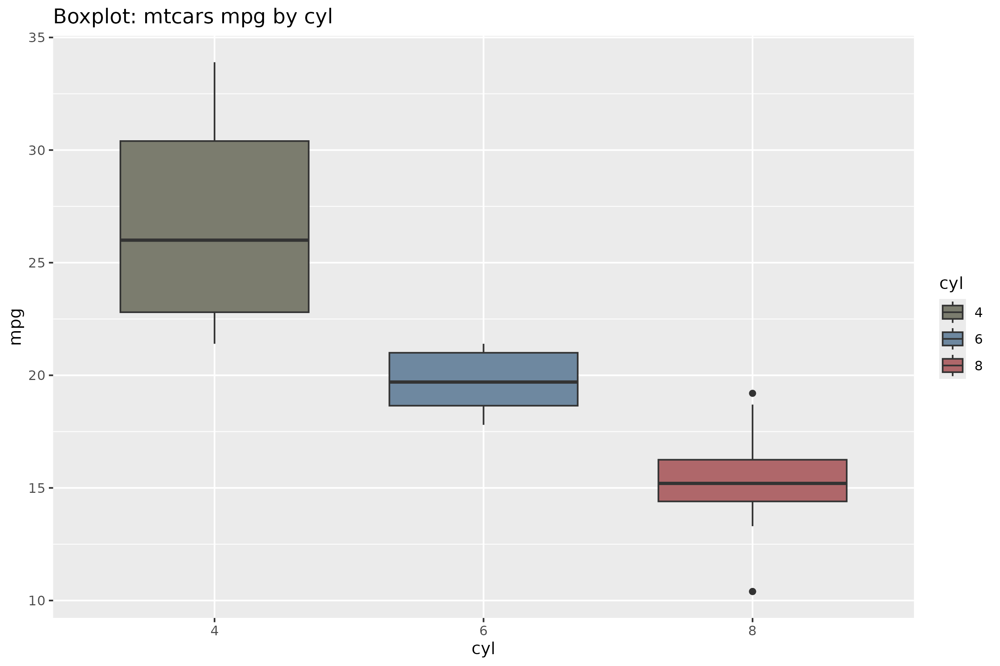
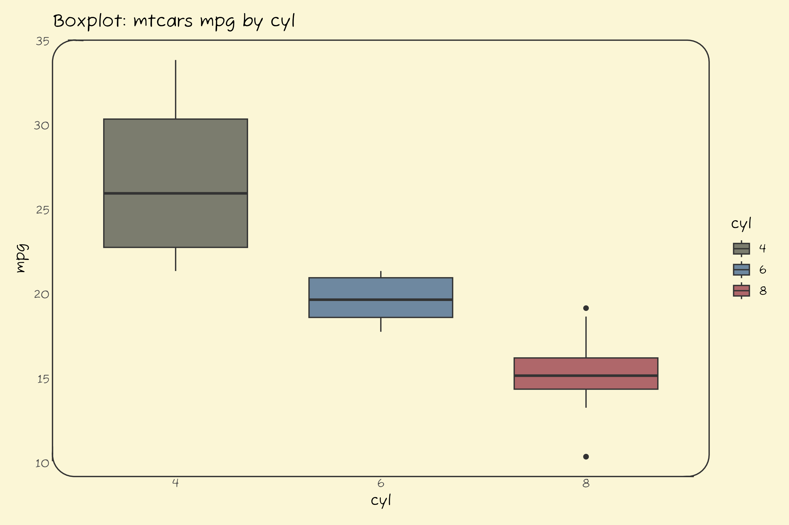
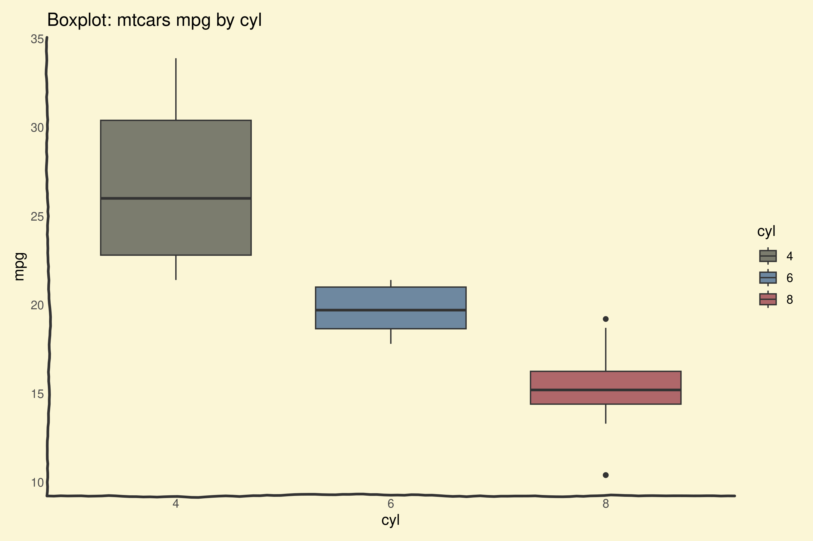
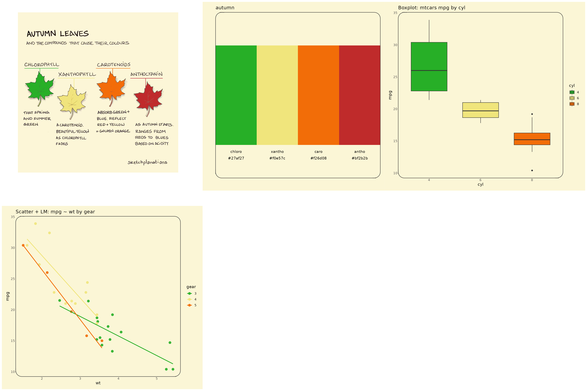
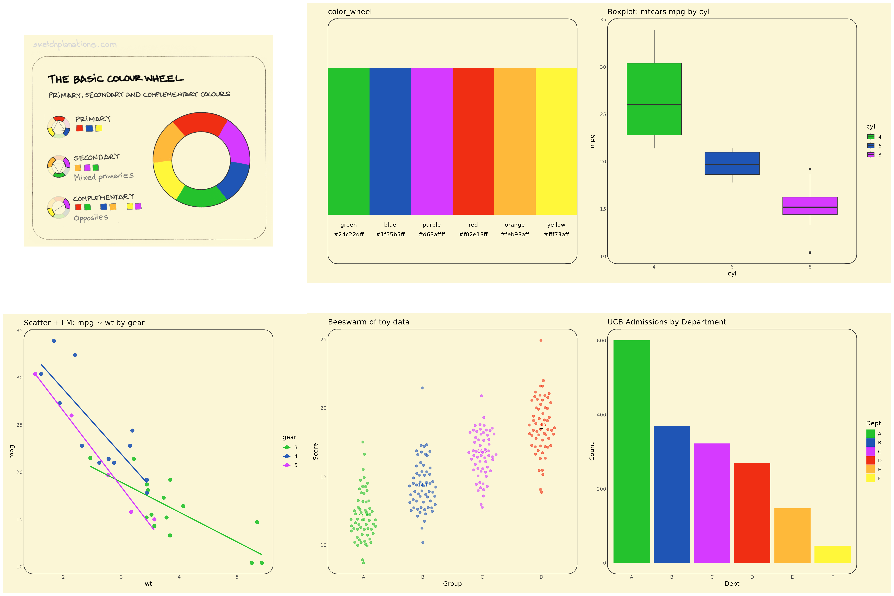
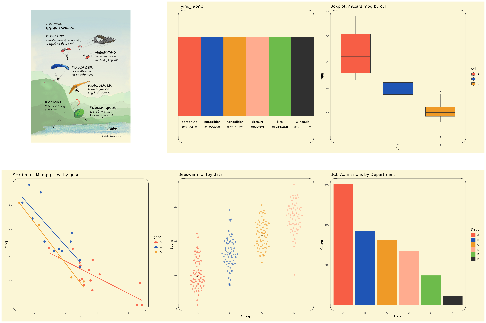
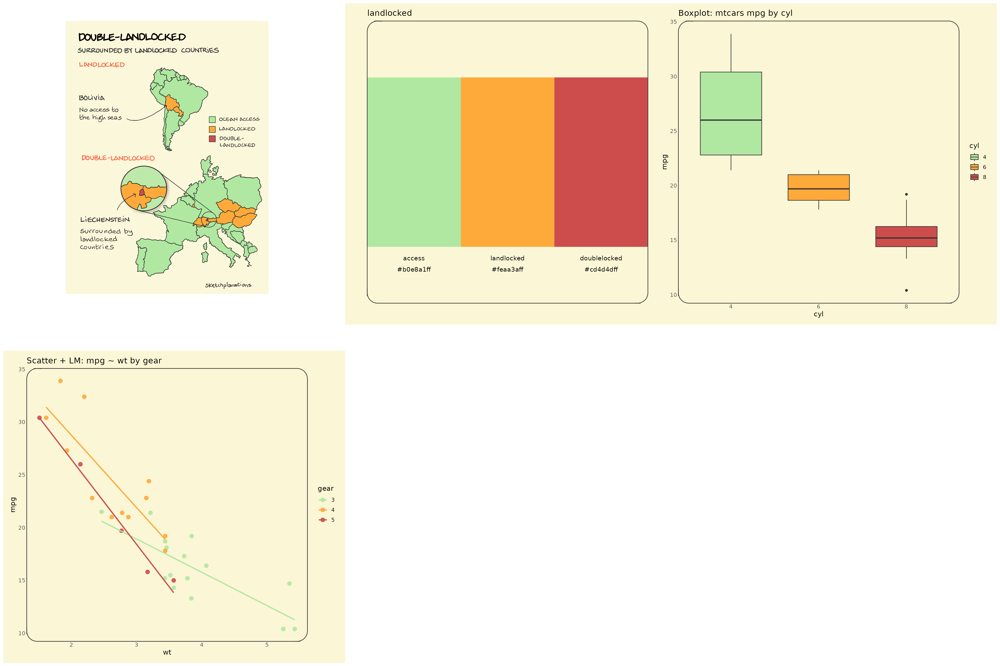
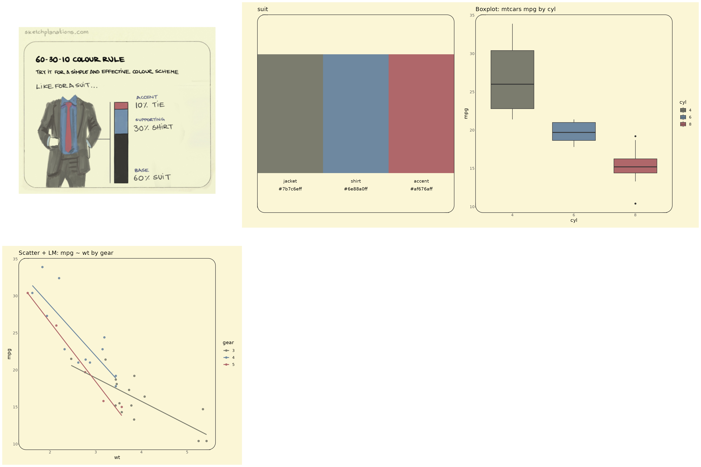
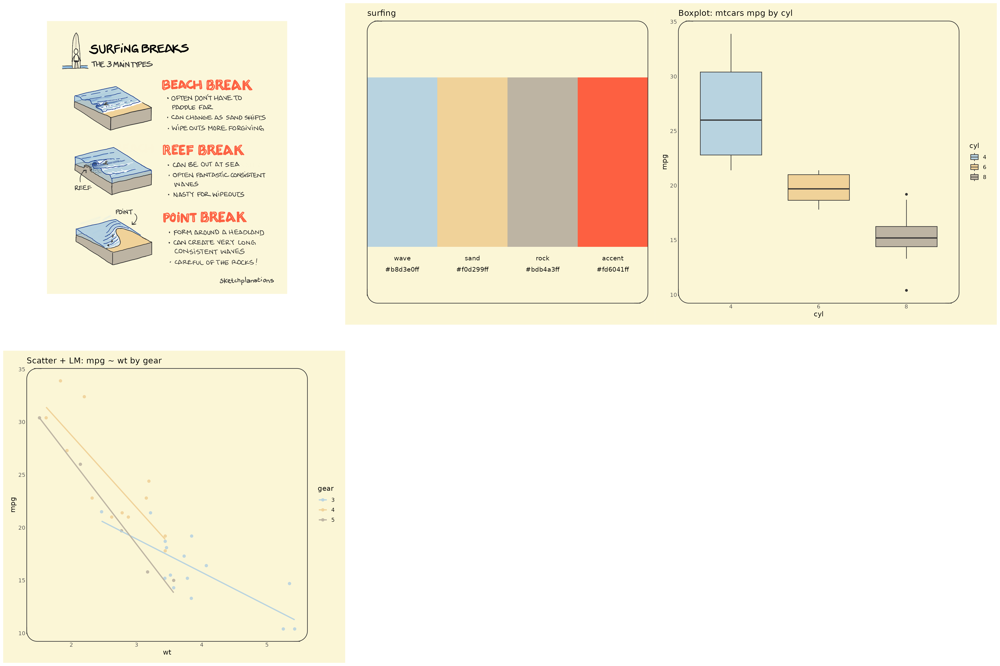

The goal of jonohey is to provide color palettes inspired by Jono Hey’s sketches at Sketchplanations.
Installation
You can install the development version of jonohey from GitHub with:
# install.packages("pak")
pak::pak("matiasandina/jonohey")Example
These examples display the color palettes themselves. For utilization of the package, check the docs 📖.
library(jonohey)
library(patchwork)
library(ggplot2)
plot_box_mtcars <- function(palette_name) {
d <- transform(mtcars, cyl = factor(cyl))
ggplot(d, aes(cyl, mpg, fill = cyl)) +
geom_boxplot(width = 0.7) +
scale_fill_jonohey(palette_name) +
labs(title = "Boxplot: mtcars mpg by cyl")
}
plot_box_mtcars("suit")
We provide themes to make this plot a bit more interesting (and closer in nature to their true sketch identity!).
# make a round panel!
plot_box_mtcars("suit") + theme_card(radius_panel = 18)
# Make it more cartoonish
plot_box_mtcars("suit") + theme_axes_wiggle()
Check 📖 the docs!
autumn
Below is the showcase for the autumn palette.
You can find the source for the sketch inspiring the palette at Sketchplanations

color_wheel
Below is the showcase for the color_wheel palette.
You can find the source for the sketch inspiring the palette at Sketchplanations

flying_fabric
Below is the showcase for the flying_fabric palette.
You can find the source for the sketch inspiring the palette at Sketchplanations

landlocked
Below is the showcase for the landlocked palette.
You can find the source for the sketch inspiring the palette at Sketchplanations

suit
Below is the showcase for the suit palette.
You can find the source for the sketch inspiring the palette at Sketchplanations

surfing
Below is the showcase for the surfing palette.
You can find the source for the sketch inspiring the palette at Sketchplanations
